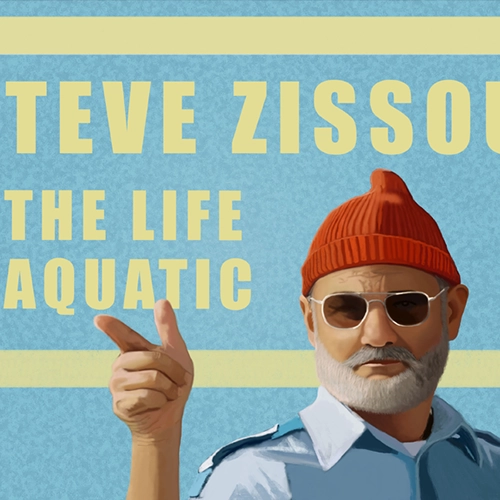
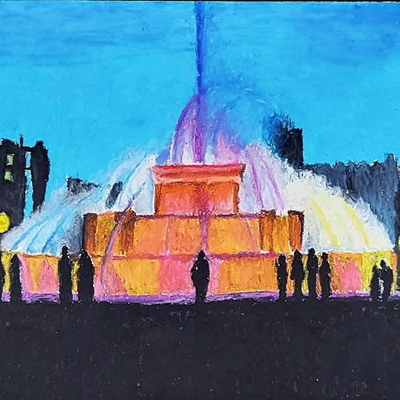

Here is a gallery of my 2D artwork. I've recently gotten back into digital painting however, alot of my older stuff while I attended school was a mix of mediums.
Retroland Main Menu | Pixel Art | 2024
Zelda, Temple of Time | Digital Painting | 2022
Travel Vlogger Landscape | Digital Painting | 2022
I Am Jack | Digital Painting | 2021

Zelda | Digital Painting | 2021

Steve Zissou | Digital Painting | 2021
Audrey Hepburn | Digital Painting | 2021
Japanese Tea Set Still Life | Digital Painting | 2021
Florida Egrets | Digital Illustration | 2021
Birds Illustrator Practice | Digital Illustration | 2021
Orb & Book Still Life | Digital Painting | 2021
Skull Still Life | Digital Painting | 2021
Teapot Still Life | Digital Painting | 2021
Contour Practice | Digital Illustration | 2021
Atmospheric Landscape | Digital Painting | 2021
Tree on the Mountaintop | Digital Painting | 2021
Human Eye Practice | Digital Painting | 2021

Ollie Portrait | Digital Painting | 2016
Self-Portrait | Digital Illustration | 2012
Lilium | Digital Illustration | 2012
Captain Ahab | Ink Illustration | 2012
Shibuya Orange | Acrylic on Canvas | 2012
Crosshatch Portraits | Ink Illustration | 2012
Wolf Two-Toned | Ink Illustration | 2012
Ann Rand Two-Toned | Ink Illustration | 2012
Why the long face Gaddafi? | Illustration Graphite | 2012
The Rhino Train | Graphite Illustration | 2012
The Candy Salon | Digital Collage | 2011
Sprinkle Skull | Sprinkle Art | 2011

Night Fountain | Oil Pastels | 2011
The Bus | Oil Pastels | 2011
Self-Portrait Distorted | Ink and Graphite | 2010
Wolfgang Weingart "Hope" | Digital Illustration | 2010
Freedom | Ink and Colored Pencil | 2009